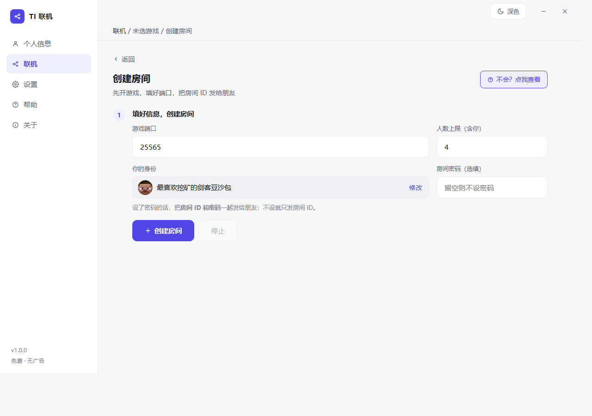

同样是"让两台电脑连上"，但数据走的路完全不同。
常见的穿透工具是中转：你的数据要绕一圈经过它的节点，所以免费档总是限速限量。 这个工具是把两台电脑直接接通 —— 服务器只负责"让你们互相知道对方在哪"， 之后一个字节都不经手。
既然是直连，速度和流量只取决于你俩自己的网络 —— 不会用着用着突然被限速，也不会每个月卡你几个 G。
联机本身是两台电脑直连，中间不需要我们做任何事； 要用官方的「穿透服务器」帮忙牵线，得有一个账号。 它只用来放行连接和事后追责 —— 游戏数据不经过服务器。
界面很简单：开个房，把房间号发给朋友，剩下它自己搞定。

开房：填个端口就行，房间号自动生成
三步，两边各装一个 exe 就行。
房主打开软件，选「创建房间」，把游戏服务端开起来，然后把这串房间号发给朋友。
朋友打开同一个软件，选「加入房间」，填上房间号。
在游戏里连接提示的地址 —— 就这样，两边会直接连上。
两边都要装这个软件（一个 exe，双击即用）。 房主那边的游戏得先开着 —— 它是"服务器"那一端。
这个软件是作者自己联机玩的时候顺手做出来的，不收费、不卖会员、没有广告， 以后也不会变成那样。
唯一的要求是别拿它去干不该干的事。因为它不转发数据，本身也没有什么可"薅"的东西； 但既然挂着自己的名字，还是希望它干干净净的。
120.227.*.*），仅用于排查故障。